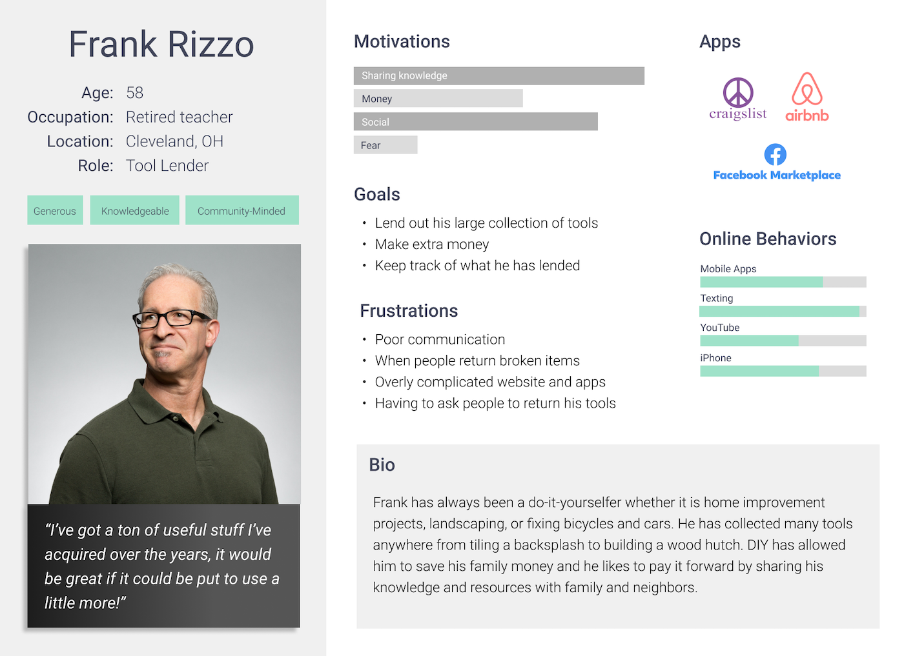
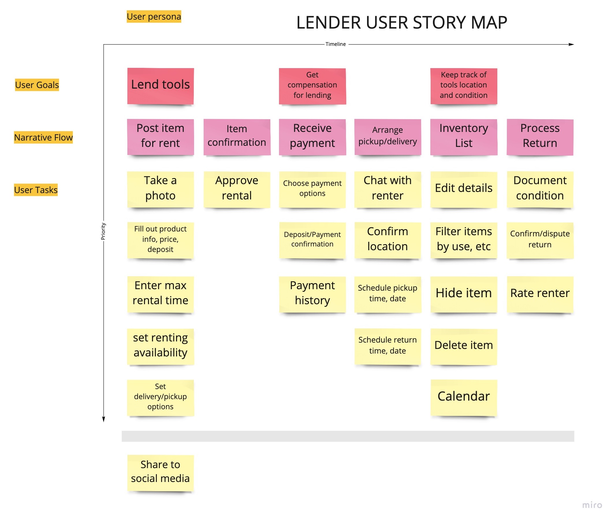
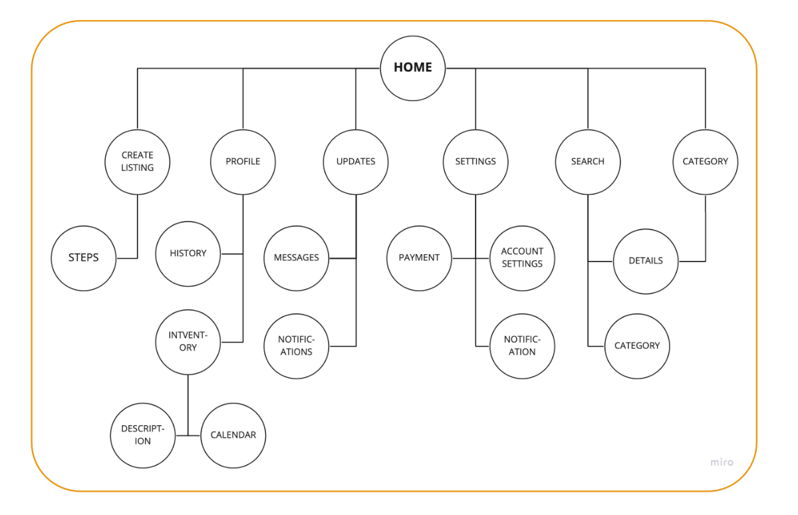
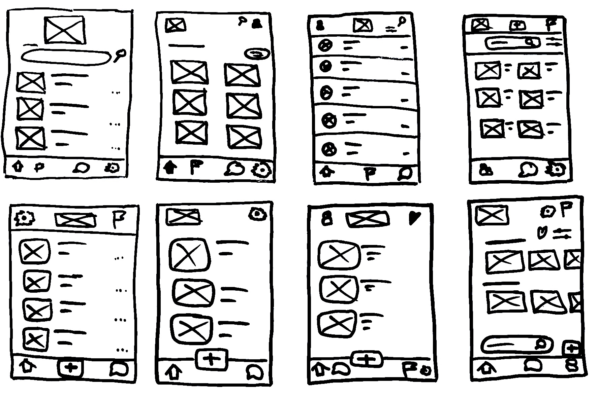
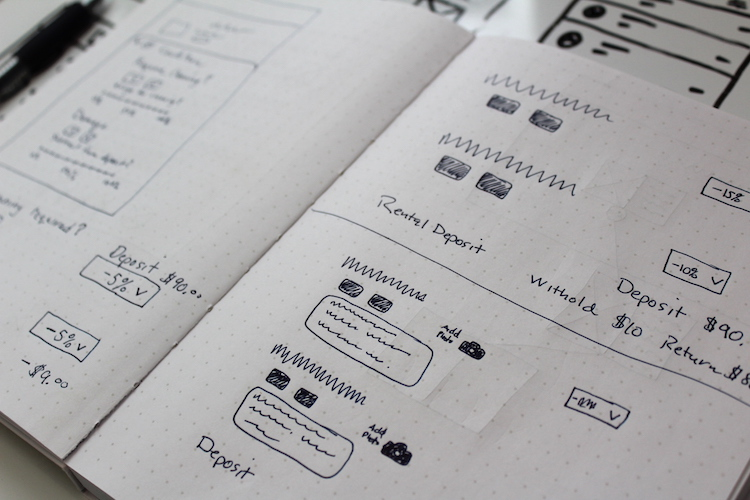
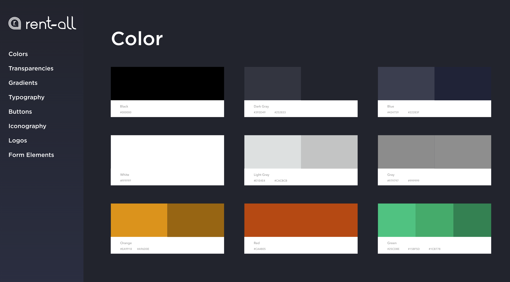
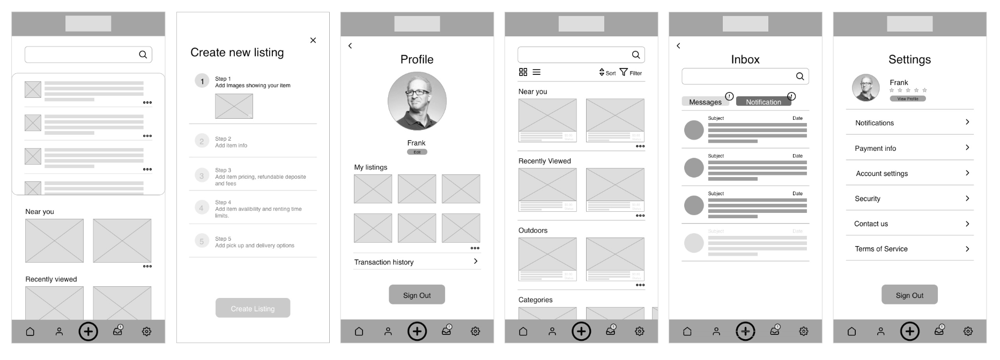
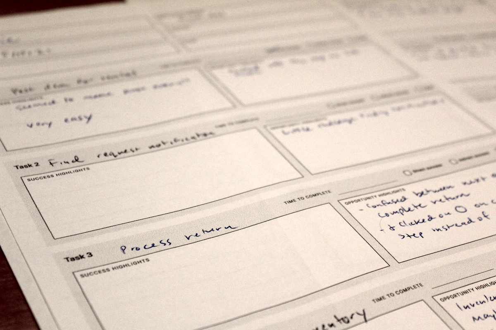

Project Scope:
- My Role: User Research, User Testing, UX Design
- Tools: Sketch, FigJam, Miro, InVision
- Timeline: May 2021 (3 weeks)
- Deliverables: Sketches, persona, user story map, wireframes, high fidelity prototype
- Team: Myself, Keyko Valasquez, and Kaycee Shipley
About the project
As DevMountain UX design bootcamp students, we were tasked with creating a mobile app that facilitates the renting of personal household items to family, friends, and community members. Our focus was mainly on rental of tools related to home maintenance. We chose branding and design that could allow for expansion into more items such as outdoor equipment or anything else that someone might have laying around their home. Additionally, our research and design was focused on the lender experience.
The Challenge
Most people accumulate a lot of items that they infrequently use, such as tools for home maintenance. It can be difficult to keep track of who we lend these items to, which results in lost items. Finding who has what you need can be a challenge as well.
Our Approach

User Research
The first step in our process was to learn about the users’ experiences in renting and borrowing things. Some general questions were:
- If you are working on a home project and you don’t have a particular tool what do you do, especially if it is something you don’t want to buy?
- What are some factors in your decision to rent or buy?
- Do you use any apps for renting items, such as vehicles, outdoor goods, or vacation rentals?
- Have you ever considered renting things, such as your home or other rentable items?
Interviews
We interviewed 7 people from different backgrounds. Our goal was to uncover their needs and pain points with lending and renting items.
Key Takeaways:
- Rent because of space constraints
- Concerned about safety
- Prefer avoiding big box stores
- People do not return items in a timely manner
- Would like to earn extra money
User Quotes:
Questionnaire
We created a 20 question survey and shared it over social media and neighborhood groups. The questions were phrased to understand who our respondents were. It was important to understand what types of living situations they had, and their personal networks.
Overall picture:
- 90% live in a house
- 58% have used rental apps such as AirBnB
- 88% borrow and lend items several times per year
- Over 50% were open to paying to borrow an item from a neighbor

Opportunities for more investigation:
- Dive deeper into users’ experiences with similar services and apps to better understand their pain points and preferences
- Conduct survey focusing on apartment dwellers
Define
After collecting quantitative and qualitative data about our users, we took that information to define the goals, motivations, and frustrations of our target user.
Empathy Map
{kind=link}
Persona
{kind=link}

Story Map
{kind=link}

Site Map
And the last step in our definition process was to create a site map. Between the site map and user story map we had all we needed to begin designing.
{kind=link}

Ideate
During the ideation phase we got into working out the design of our app. This involved brainstorming designs by sketching out ideas. Each of our team members shared their sketches and we compared designs. We came to a consensus on the design direction and the features that made the most sense.
Sketching
{kind=link}

Iterating in "crazy eights"
{kind=link}

Iterating upon component designs
Style Guide
After playing around with color palettes and fonts, we decided to design the app as a dark-mode theme. Keyko threw together a slick style guide in Adobe XD for reference as the project progressed.
{kind=link}

Prototype
The first step in the prototyping phase was to create wireframes for all the pages and features, and create a basic low-fidelity prototype for testing. Some of the feedback we received in initial user interviews was incorporated into the designs.
{kind=link}

Main pages of the low-fidelity prototype
A different Approach
During initial interviews, several users complained that they often missed notifications. Many apps make them separate from messages. In response we kept messages and notifications in one place.
{kind=link}
We were concerned that this might result in confusion. Later, user testing would validate the usability of this design.
Key takeaways:
- Listen to your users
- Don't always depend on design patterns from popular apps
Testing with users
For usability testing we used InVision to create a clickable prototype. We created a testing script that included six tasks. Eight users took part in the testing.
{kind=link}

Task sheet
Compiling results
Once we completed our usability testing we transferred all of our results to a spreadsheet. This was a helpful way to compare our testing results, and propose solutions to the issues users faced.
{kind=link}